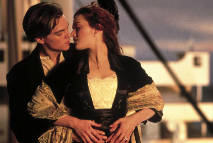
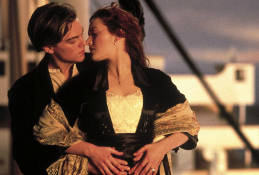

My Favorite Movies

My Favorite Movies

In 1912 Southampton, 17-year-old first-class passenger Rose DeWitt Bukater, her fiancé Cal Hockley, and her mother Ruth board the luxurious Titanic. Ruth emphasizes that Rose's marriage will resolve their family's financial problems and retain their high-class persona. Distraught over the engagement, Rose considers suicide by jumping from the stern; Jack Dawson, a penniless artist, intervenes and discourages her. Discovered with Jack, Rose tells a concerned Cal that she was peering over the edge and Jack saved her from falling. When Cal becomes indifferent, she suggests to him that Jack deserves a reward.